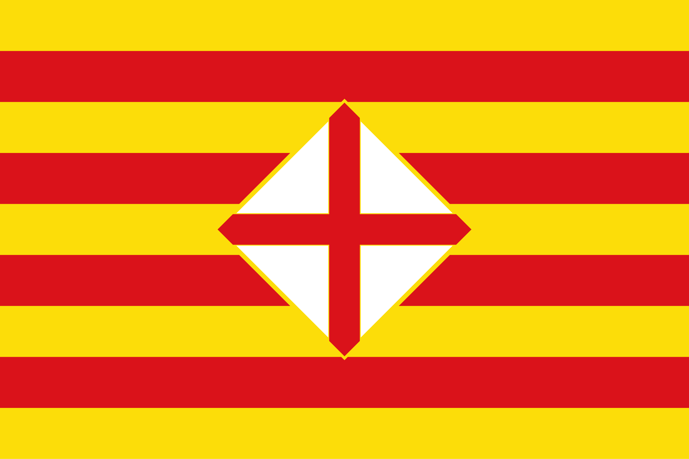
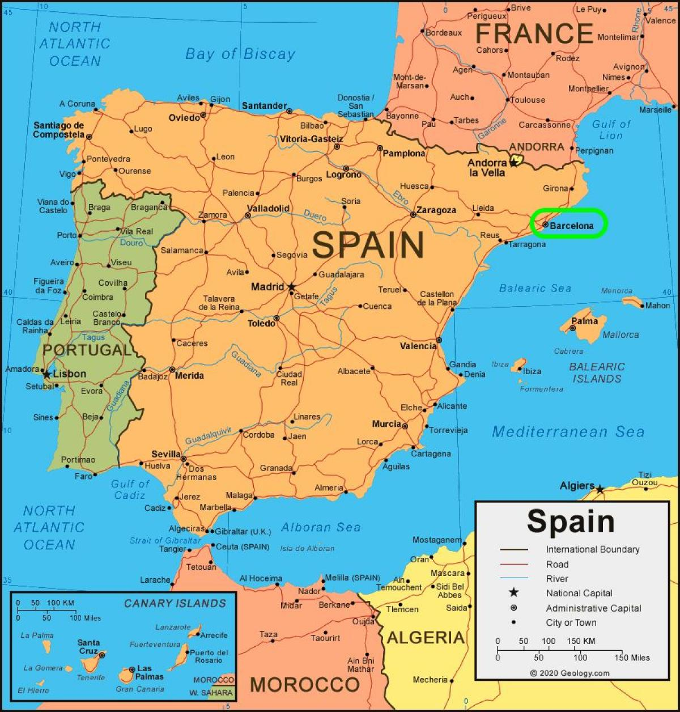
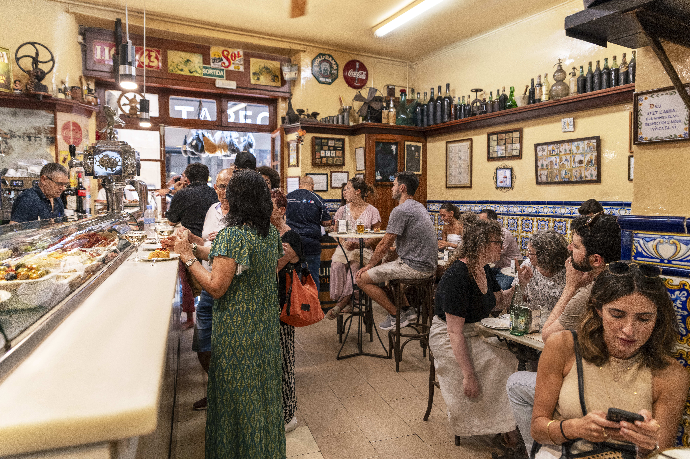
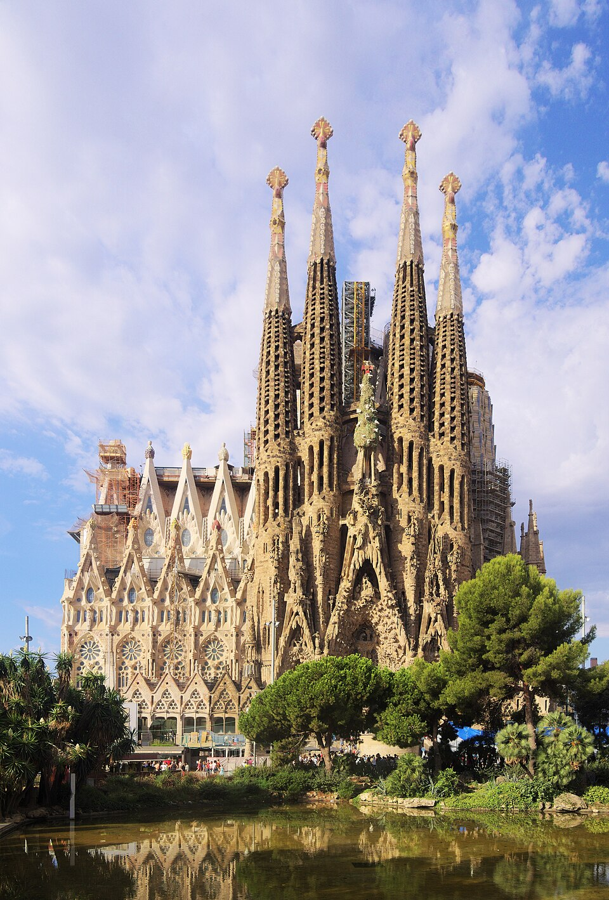
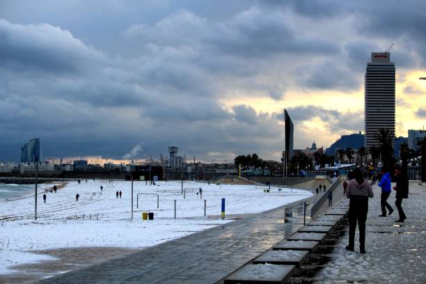
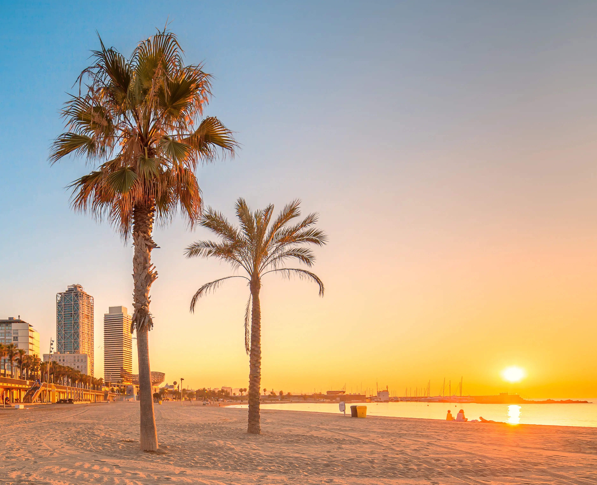
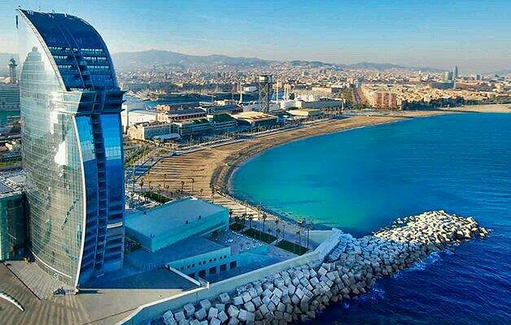
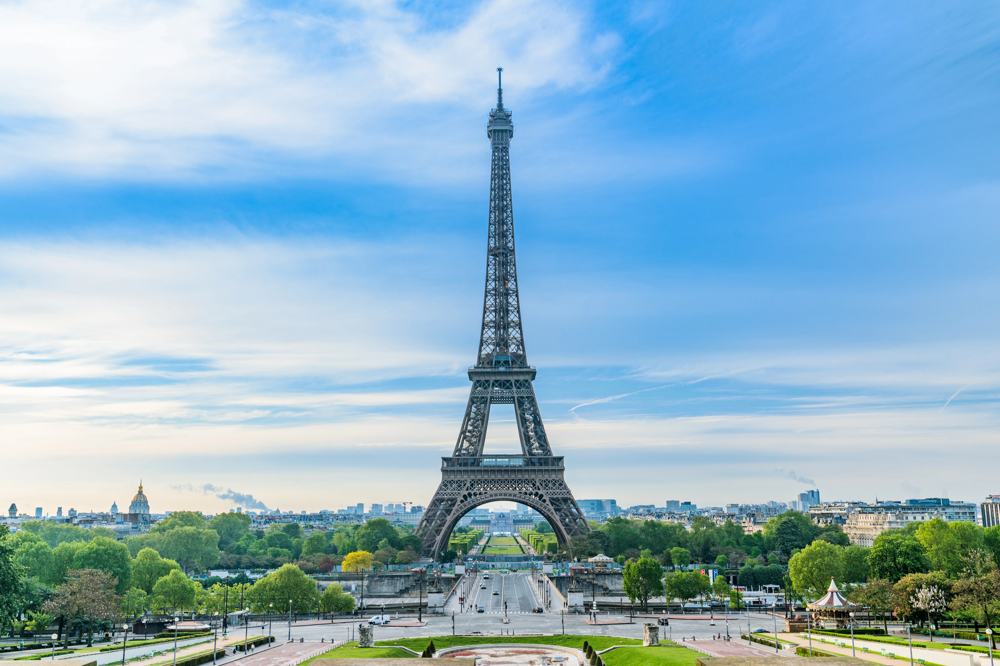

About
Location
Barcelona is in the Catalonia region of Spain. It is also the capital city of the region and is the region’s major cultural and economic hub. Barcelona is situated on the northeastern coast of Spain, in the region of Catalonia, where it meets the Mediterranean Sea. The city lies on a coastal plain bordered by the Collserola mountain range to the west, the Llobregat river to the southwest, and the Besòs river to the north. Its location combines an urban setting with a seaside environment, featuring a 4.5-kilometer-long coastline with beaches like Barceloneta. More
Weather
During winter Barcelona usually experiences highs of low 60s to high 50s and lows beings mid-40s. Barcelona's winter weather (December through February) is generally mild and temperate compared to much of Europe, with comfortable daytime temperatures and cooler nights. Snow is very rare in the city itself, though it may occur in nearby mountainous regions like the Pyrenees. More
History
Barcelona’s origins started as an Iberian village named Barkeno over 2,000 years ago. It grew into a major medieval port city and the capital of the Crown of Aragon before its political and economic importance declined with the shift of trade routes to the Atlantic after the union of Castile and Aragon. The city underwent an industrial boom in the 19th century, and after being a Republican stronghold during the Spanish Civil War, it was revitalized by hosting the 1992 Olympic Games. It remains the second largest city in Spain.
Barcelona Flag

Barcelona Map

Dining
El Xampanyet

El Xampanyet is a historic and bustling tapas bar in Barcelona, known for its traditional Spanish dishes, house-made cava, and lively, authentic atmosphere. Established in 1929, it offers a mix of cold and hot tapas, including canned seafood and dishes from the owner's grandmother's recipes. Visitors can expect a cozy, sometimes crowded, environment that combines old-world charm with a buzzing, communal feel, and a great place to experience a piece of Barcelona's culture.
Things to Do
Tour of La Sagrada Família
La Sagrada Família is an unfinished Roman Catholic basilica in Barcelona, Spain, designed by Antoni Gaudí. It is known for its unique blend of Gothic and Art Nouveau styles, organic shapes inspired by nature, and intricate details. The basilica is famous for its soaring, tree-like interior columns, a forest of colorful stained-glass windows, and three grand façades that depict key moments in the life of Jesus Christ. It is said that the main exterior will be completed by 2026.

Tablao Flamenco Cordobes Barcelona
Tablao Flamenco Cordobes is a historic and intimate flamenco venue on Las Ramblas in Barcelona, known for its authentic performances and unique Nasrid-inspired decor. The experience includes passionate live shows by world-renowned artists, with options for a buffet dinner featuring traditional Spanish and Catalan dishes before the performance. A key feature is that the shows use no microphones, allowing the natural sounds of the music and dance to fill the space.
Barceloneta Beach
Barceloneta Beach is a popular beach in Barcelona known for its golden sand, clear water, and lively atmosphere, located in the city's traditional fishing district. It's a hub for activities like swimming, sunbathing, and sports, and is surrounded by many seafood restaurants and tapas bars. Key landmarks include the art installation L'Estel Ferit and the modern W Barcelona hotel.



Bonus
What famous piece of architecture was offered to Spain to be put in Barcelona but was ultimately rejected?

The Eiffel Tower! The city declined the proposal, beliving the design too ugly ,and not right for the city. Gustave Eiffel then proposed it to Paris for the 1889 World's Fair, and it was built there instead.